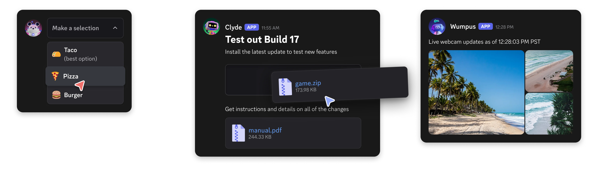

组件概览
组件允许您向模态框和应用程序发送的消息中添加交互元素。它们易于访问、可自定义且使用简便。

Discord 应用程序支持三种类型的消息组件：布局组件、内容组件和交互组件。每种组件类型都有其特定的用途和适用场景。
- 布局组件：这些组件用于组织和构建消息内容。它们有助于创建视觉吸引人且用户友好的布局。
- 内容组件：这些组件用于在消息中显示信息和内容。可以包括文本、图像和其他媒体。
- 交互组件：这些组件允许用户与您的消息进行互动。可以包括按钮、选择菜单和其他交互元素。
所有组件均可自定义，并可以使用布局组件进行组织，以创建丰富、交互式的消息体验。
要使用组件，消息必须附带 IS_COMPONENTS_V2 标志（1<<15）发送。请注意，使用此标志会禁用传统内容和嵌入——所有内容必须作为组件发送。
旧版消息组件行为 不会被弃用，并将继续在每个消息的基础上对您的应用程序可用。但是，我们建议在新项目和功能中使用新组件。
您有问题或想与其他应用程序开发者联系吗？
- 加入我们的 DDevs Discord 服务器，从社区获得帮助，分享最佳实践，并发现增强应用程序的新方法。